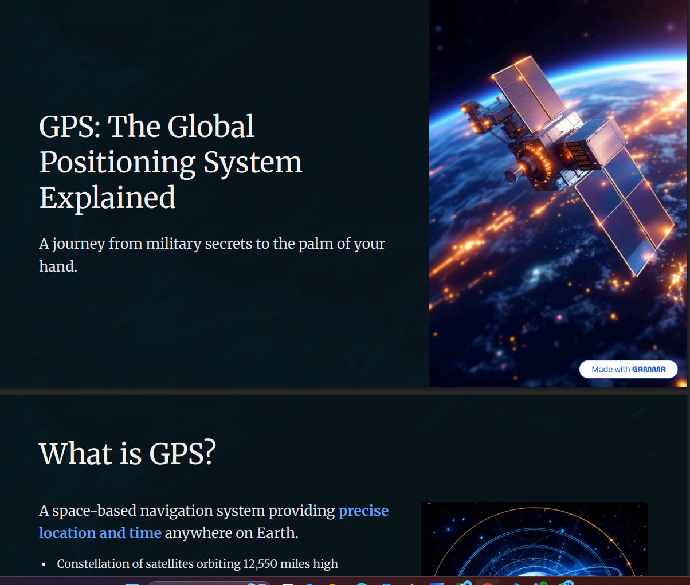

Projects

Six Orbital Elements Calculator
Calculating the six orbital elements for any orbit using gibbs method
View CSV
GPS presentation
I made a presintation about GPS and how they work to activly show your location
View CSVServices
Data Analysis
Transform raw data into actionable insights using advanced analysis techniques.
Data Visualization
Create professional dashboards and visual reports for better decision-making.
Machine Learning
Build predictive models and AI systems tailored to your business needs.
Database Management
Design and optimize databases for performance, reliability, and scalability.
Education
Bachelor's in Navigation Science and Space Technology
Beni Suef UniversityFocused on space systems, satellite navigation, orbital mechanics, and data analysis applications.